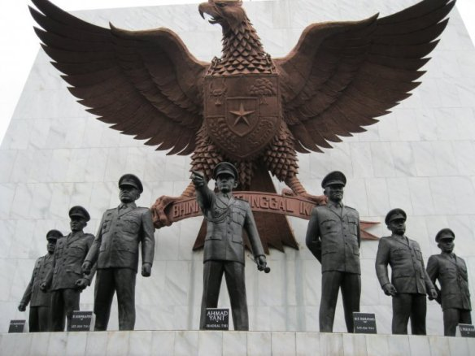
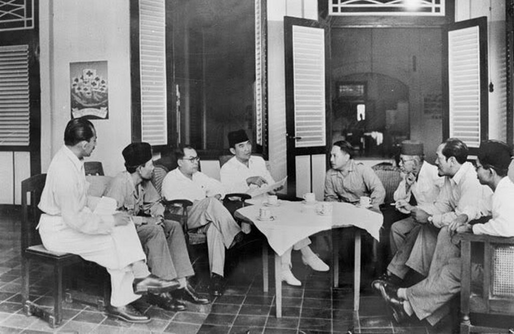

Hari Lahir Pancasila

Hari lahir Pancasila jatuh pada tanggal 1 Juni yang ditandai oleh
pidato yang dilakukan oleh Presiden pertama Indonesia, Soekarno
pada 1 Juni 1945 dalam sidang Dokuritsu Junbi Cosakai (Badan
Penyelidik Usaha Persiapan Kemerdekaan). Pidatonya pertama kali
mengemukakan konsep awal Pancasila yang menjadi dasar negara
Indonesia. Adapun sejarahnya berawal dari kekalahan Jepang pada
perang pasifik, mereka kemudian berusaha mendapatkan hati
masyarakat dengan menjanjikan kemerdekaan kepada Indonesia dan
membentuk sebuah Lembaga yang tugasnya untuk mempersiapkan hal
tersebut. Lembaga ini dinamai Dokuritsu Junbi Cosakai. Pada sidang
pertamanya di tanggal 29 Mei 1945 yang diadakan di Gedung Chuo
Sangi In (sekarang Gedung Pancasila), para anggota membahas
mengenai tema dasar negara.
Kronologi dan Sejarah Hari Lahir Pancasila

Sidang berjalan sekitar hampir 5 hari, kemudian pada tanggal 1 Juni 1945, Soekarno menyampaikan
ide serta gagasannya terkait dasar negara Indonesia, yang dinamai “Pancasila”. Panca artinya lima,
sedangkan sila artinya prinsip atau asas. Pada saat itu Bung Karno menyebutkan lima dasar untuk negara Indonesia,
yakni Sila pertama “Kebangsaan”, sila kedua “Internasionalisme atau Perikemanusiaan”, sila ketiga “Demokrasi”,
sila keempat “Keadilan sosial”, dan sila kelima “Ketuhanan yang Maha Esa”.
Untuk menyempurnakan rumusan Pancasila dan membuat Undang-Undang Dasar yang berlandaskan kelima asas tersebut,
maka Dokuritsu Junbi Cosakai membentuk sebuah panitia yang disebut sebagai panitia Sembilan. Berisi Ir. Soekarno,
Mohammad Hatta, Abikoesno Tjokroseojoso, Agus Salim, Wahid Hasjim, Mohammad Yamin,
Abdul Kahar Muzakir, Mr. AA Maramis, dan Achmad Soebardjo.
Setelah melalui beberapa proses persidangan, Pancasila akhirnya dapat disahkan pada Sidang PPKI tanggal 18 Agustus 1945.
Pada sidang tersebut, disetujui bahwa Pancasila dicantumkan dalam Mukadimah Undang-Undang Dasar 1945 sebagai dasar negara Indonesia yang sah.